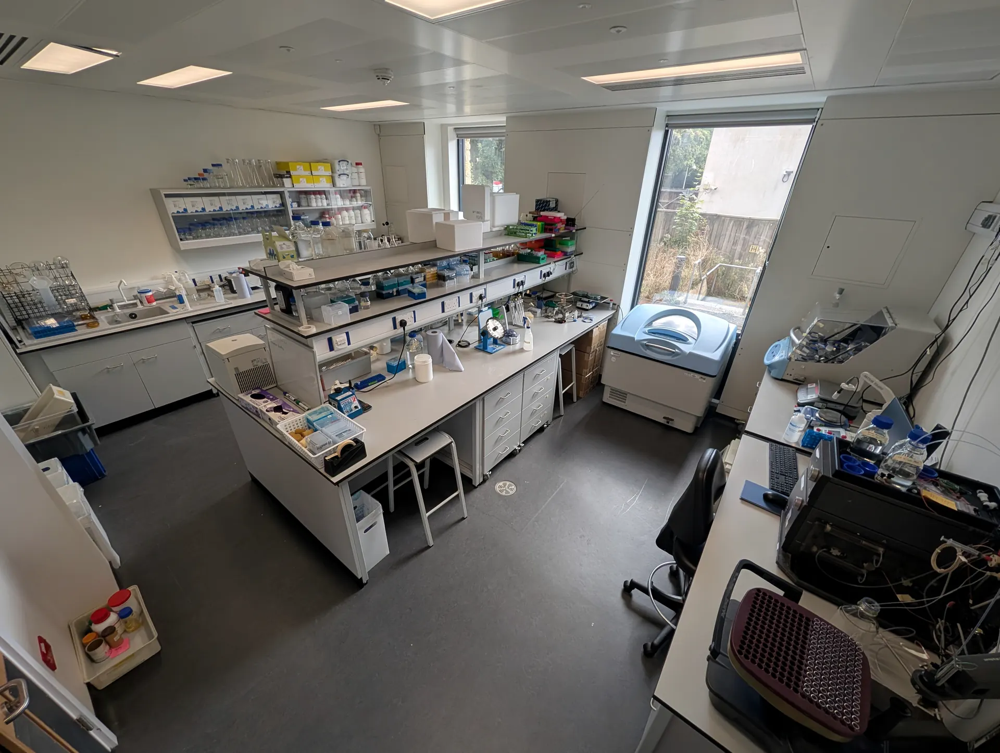
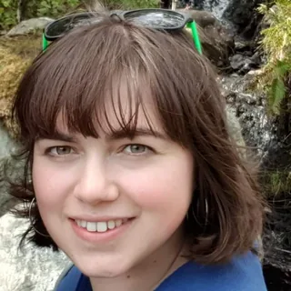
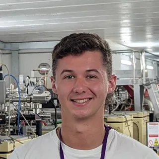
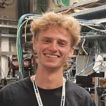
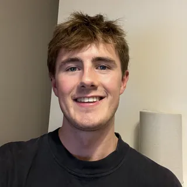

Meet the lab
Principal investigator
-

Lecturer & MRC Research Fellow Department of Life Sciences & Centre for Evolution clt81 [at] bath.ac.ukCat is a Lecturer and MRC fellow at the University of Bath, she is a structural biologist whose research focuses on the molecular mechanisms of antimicrobial resistance and the development of new strategies to inhibit β-lactam-resistant pathogens.
She is currently supported by an MRC Career Development Award, where her group combines conventional and time-resolved crystallography with complementary computational and biochemical approaches to investigate β-lactamases, penicillin-binding proteins (PBPs), and related targets relevant to antibacterial drug discovery.
Cat joined Bath as a Prize fellow in Antimicrobial Resistance in 2023 following a PhD and postdoctoral research in Prof. Jim Spencer’s Laboratory at the University of Bristol.
2015 BSc in Cellular and Molecular Medicine
2019 PhD in Biochemistry (SWbioDTP, BBSRC), University of Bristol.
2023 Prize Fellow in Antimicrobial Resistance p>
Outside of the lab Cat enjoys hiking, being incredibly average at myriad hobbies, top notch food, and running new Strava segments around synchrotrons and XFELS.
-

Postdoctoral researcher hm745 [at] bath.ac.ukPrior to his PhD, Harry worked as a Research Assistant at Inspiralis Ltd (Norwich, UK), expressing and purifying topoisomerase enzymes for research.
Harry completed his PhD at Cardiff University/Prifysgol Caerdydd under the supervision of Dr Benjamin Bax (Medicines Discovery Institute) and Dr Anna Warren (Diamond Light Source), utilizing the microfocus beamline VMXm to study twinning in DNA gyrase crystals, and the XChem platform to uncover novel drug-like fragments that bind allosterically to a DNA gyrase – DNA complex.
Following his PhD, Harry joined the Tooke lab at the University of Bath to bring his expertise in crystallography and fragment-based drug discovery to the world of β-lactam antibiotics. Currently, Harry is working on a project to understand the role of K. pneumoniae penicillin binding protein 7 (PBP7) and how it relates to antimicrobial resistance (AMR). Harry is acutely interested in applying neutron macromolecular crystallography (NMX) to visualise hydrogens, and structure-based drug discovery (SBDD) to develop novel β-lactam therapeutics.
Away from the lab bench, Harry enjoys weightlifting, running, fishing, and generally being outdoors. Harry is a proud supporter of Welsh Rugby, following his home team the Neath & Swansea Ospreys.
Funded by MRC, start date 01/06/2026
BSc Chemistry – University of York, 2:1, Final year project on crystallographic analysis of GPCR proteins and asthma drug development (Biological Chemistry).
MSc Medicinal Chemistry – Cardiff University/Prifysgol Caerdydd, Distinction, Research project on S. aureus DNA gyrase crystallisation optimisation and initial structural analysis.
PhD in Structural Biology & Crystallography – Cardiff University/Prifysgol Caerdydd and Diamond Light Source, Title: Structure-guided drug design of novel antibiotics targeting DNA gyrase.
-

PhD student lr19354 [at] bristol.ac.ukBefore joining the Tooke lab, Joe completed his MSc by Research degree at the University of Bristol, under the supervision of Prof Jim Spencer. Here, he used X-ray crystallography combined with molecular dynamics simulations to understand how β-lactamases degrade β-lactams and also how they can be inhibited.
Joe’s PhD project now investigates the mechanistic targets of β-lactams, penicillin-binding proteins, primarily using experimental structural biology (X-ray crystallography, Cryo-EM) complemented with molecular dynamics simulations to understand the molecular basis of β-lactam action and resistance in clinically-important bacterial pathogens.
Outside of research, Joe enjoys chess, tennis and planning the next bikepacking trip.
Funded by GW4 BioMed2 MRC Doctoral Training Partnership, start date 09/09/2024
BSc Biochemistry – University of Bristol, 1st class honours, Final year project: “Structural analysis of the kinesin-1:cargo adaptor interactome using AlphaFold2”.
MScR Cellular and Molecular Medicine – University of Bristol, “Interactions of OXA-48 class β-lactamases with substrates and inhibitors”.
-

Undergraduate student ad2636 [at] bath.ac.ukXandi is entering his final year at the University of Bath studying Biochemistry and has joined the lab over the summer to work on crystal optimisation of AmpH.